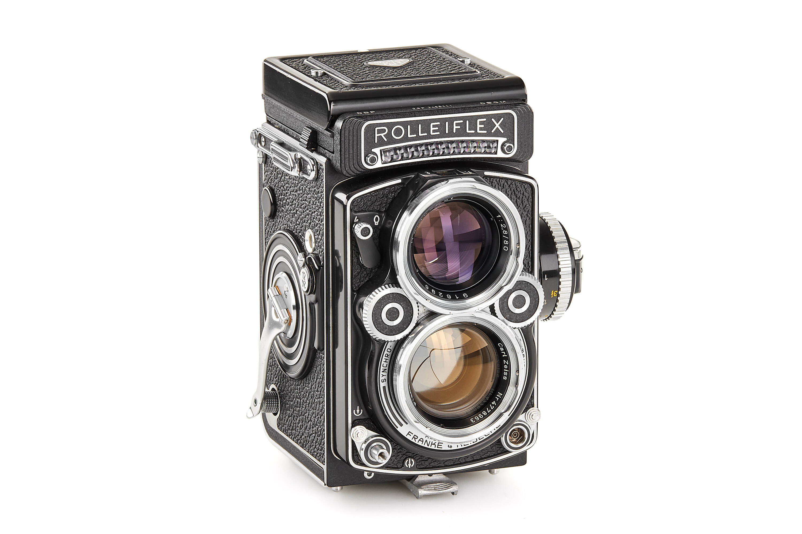
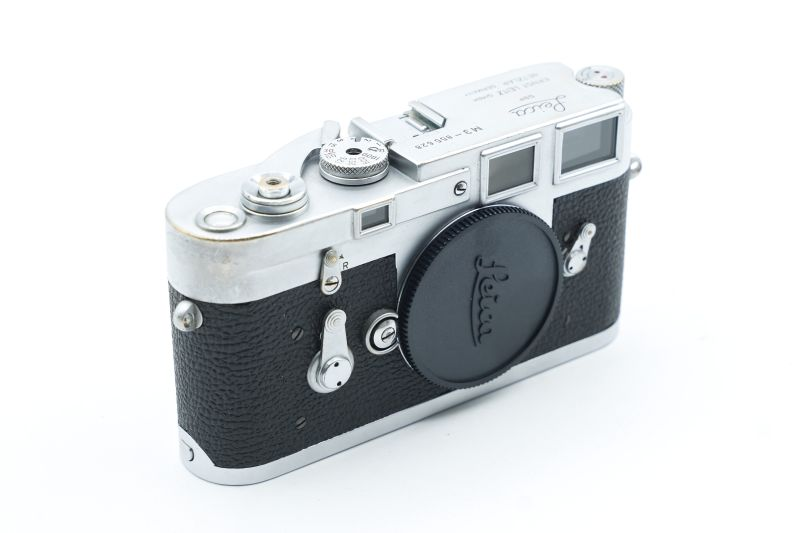
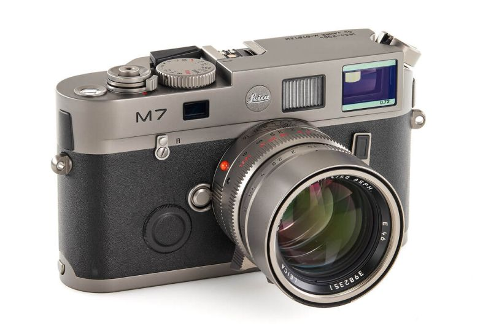
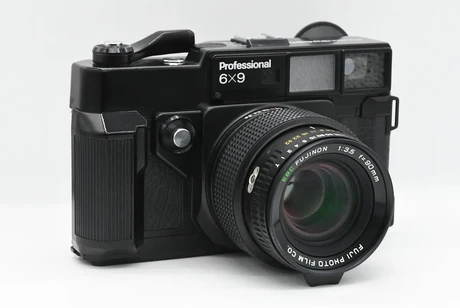

Rolleiflex 2.8F
Twin Lens ReflexRolleiflex 2.8F
- Format: 120mm Medium Format (6x6)
- Taking Lens: Carl Zeiss Planar 80mm f/2.8
- Viewing Lens: Heidosmat 80mm f/2.8
- Shutter: Synchro-Compur (1 - 1/500s)
- Introduced: 1960

Leica M3
35mm RangefinderLeica M3
- Format: 35mm Standard Film
- Mount: Leica M-Mount
- Viewfinder: 0.91x magnification
- Shutter: Focal plane (1 - 1/1000s)
- Introduced: 1954

Leica M7 Titan
50 Years EditionLeica M7 Titan
- Released: 2004 (50th Anniversary)
- Production: Limited to 500 units
- Material: Solid Titanium Finish
- Lens: Summilux-M 50mm f/1.4 ASPH
- Format: 35mm Rangefinder
- Shutter: Electronic (32s - 1/1000s)

Fujica GW690
Medium Format RangefinderFujica GW690
- Format: 6x9 on 120/220 Film
- Lens: Fujinon 90mm f/3.5
- Viewfinder: Rangefinder with parallax correction
- Shutter: Mechanical leaf (1 - 1/500s)
- Weight: 1,430g (3.15 lbs)
- Introduced: 1978